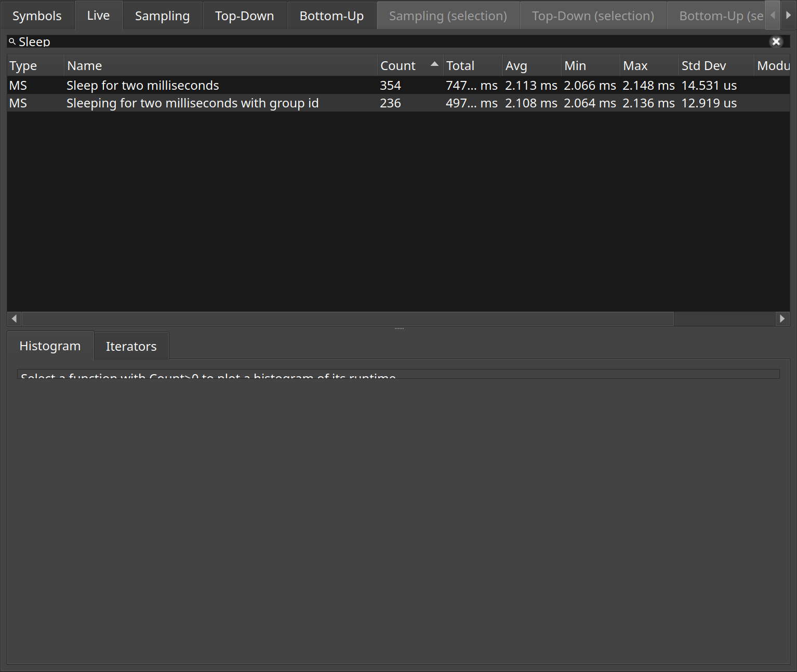

Manual instrumentation
Scopes the target names itself, through the ORBIT_SCOPE macros, alongside everything else.
Dynamic instrumentation can time any function, but only a function. Code that wants to time part of one, or to name what it is doing, includes Orbit's API header and brackets the region with ORBIT_SCOPE. Those scopes arrive in a capture as ordinary timed slices, with the name and colour the target gave them.
OrbitTest uses the API throughout, which is why names like "Sleep for two milliseconds" appear in a capture of it next to the function names that came from symbols.
